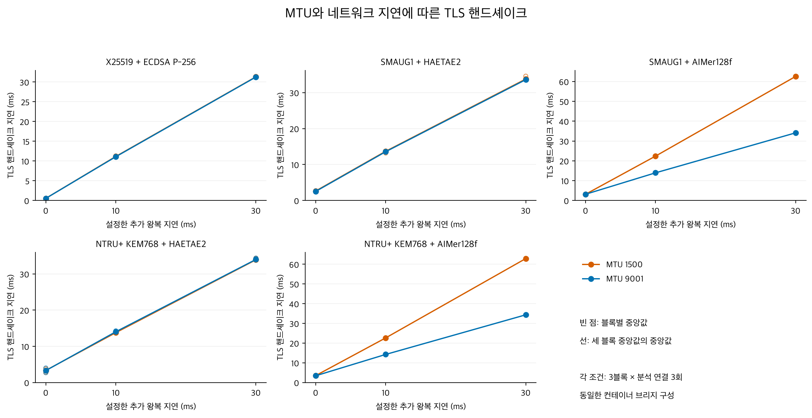
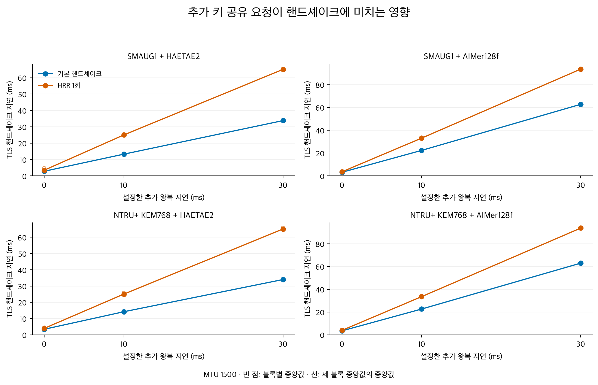
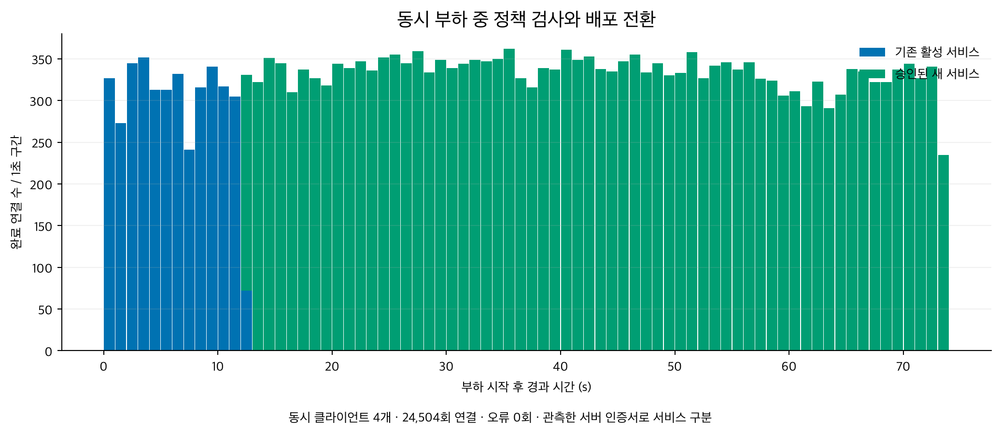

KPQC TLS: 네트워크 조건과 동시 부하 실험 결과
이 보고서는 두 갈래 시험을 함께 기록한다. MTU (Maximum Transmission Unit)·추가 네트워크 지연·HRR (HelloRetryRequest)·동시 접속은 TLS 성능 특성 측정이다. 마지막 부하 중 배포 전환 항목은 DevOps 배포 시나리오이며, 성능 벤치마크와 구분해 해석한다. 두 시험은 기존 EC2 두 대와 대표 암호 조합 5개를 사용했다.
성능 측정 실행 · 소스 fa1202c · 성능 검증 654항목 통과. 배포 부하 재시험 · 소스 c9ebcfa. 실행 후 두 EC2의 중지 상태를 AWS API로 별도 확인했다. 이번 결과는 사용자 검토용이며 저장소 루트의 기존 성능표를 대체하지 않았다.
1. MTU 및 네트워크 지연
AWS는 모든 EC2 인스턴스의 MTU1500 지원과 인터넷 게이트웨이 트래픽의 1500바이트 제한을 명시한다. 기존 MTU9001 환경에 MTU1500 대조군을 두는 것은 타당하다. 두 조건은 같은 Docker 브리지 구성에서 비교했다. AWS 공식 문서
표는 세 블록 중앙값의 중앙값이며 단위는 ms다. 추가 왕복 지연은 양 끝 송신 지연의 합으로 설정한 값이다.
| 암호 조합 | 추가 0 ms · MTU1500 | 추가 0 ms · MTU9001 | 추가 30 ms · MTU1500 | 추가 30 ms · MTU9001 |
|---|---|---|---|---|
| X25519 + ECDSA P-256 | 0.547 | 0.539 | 31.322 | 31.271 |
| SMAUG1 + HAETAE2 | 2.640 | 2.531 | 33.766 | 33.609 |
| SMAUG1 + AIMer128f | 3.143 | 3.159 | 62.576 | 34.128 |
| NTRU+ KEM768 + HAETAE2 | 3.350 | 3.300 | 33.906 | 33.994 |
| NTRU+ KEM768 + AIMer128f | 3.504 | 3.427 | 62.886 | 34.350 |

각 조건의 관측 TCP RTT (Round-Trip Time)와 MSS (Maximum Segment Size)는 블록별 CSV에 함께 제공한다. 송신 측 지연 주입 결과이며 실제 인터넷 경로의 성능을 나타내지는 않는다.
2. HRR 추가 비용
HRR 유발 연결 180회에서 각각 HRR 1회, 대조 연결 180회에서 HRR 0회를 확인했다. 두 조건의 최종 KEM·서명 조합과 인증서 검증 성공을 확인했다. 분석에는 준비 연결을 제외한 총 216회를 사용했다.
표는 같은 블록에서 계산한 HRR 지연 − 대조군 지연의 세 블록 중앙값이다. 단위는 ms다.
| 암호 조합 | 추가 왕복 지연 0 ms | 추가 왕복 지연 10 ms | 추가 왕복 지연 30 ms |
|---|---|---|---|
| SMAUG1 + HAETAE2 | 0.648 | 11.550 | 31.291 |
| SMAUG1 + AIMer128f | 0.358 | 10.786 | 30.858 |
| NTRU+ KEM768 + HAETAE2 | 0.367 | 10.613 | 30.873 |
| NTRU+ KEM768 + AIMer128f | 0.383 | 10.924 | 30.934 |

3. 동시 접속 및 처리량
서버 작업자 8개, 클라이언트 프로세스 1·4·16개 조건에서 각각 8초 × 3회 측정했다. 총 273,091회 연결의 TLS 협상 및 인증서 검증을 확인했다. 표는 세 측정 구간의 처리량 중앙값이며 단위는 완료 핸드셰이크/초다.
| 암호 조합 | 동시 1개 | 동시 4개 | 동시 16개 |
|---|---|---|---|
| X25519 + ECDSA P-256 | 1,232.7 | 2,430.3 | 2,596.2 |
| SMAUG1 + HAETAE2 | 288.9 | 532.8 | 571.5 |
| SMAUG1 + AIMer128f | 279.1 | 471.5 | 556.1 |
| NTRU+ KEM768 + HAETAE2 | 266.0 | 484.0 | 530.7 |
| NTRU+ KEM768 + AIMer128f | 260.5 | 450.0 | 521.3 |

처리량은 TCP 연결·종료·계측 기록 비용을 포함하는 계측용 서비스와 부하 생성기의 결과다. 서버의 절대 최대 용량으로 해석하지 않는다. 그래프는 SSL_connect 지연과 준비 대기를 포함한 접속 지연을 구분한다.
4. 부하 중 배포 전환
첫 전체 실행에서는 26,701개 접속 기록 후 부하 프로세스 4개가 종료 코드 2로 끝났고, 새 서비스 인증서를 확인하지 못했다. 이 시험은 실패로 보존했다. 해당 버전은 종료 오류 원문을 저장하지 않아 정확한 원인은 확정할 수 없다.
후속 실행에서는 누적 전체 결과를 매번 다시 쓰던 제어 코드를 개선하고, 클라이언트 종료 오류·자원 진단·작업자 생존 여부를 기록했다. 배포 항목만 별도로 재시험했으며, 새 인증서 관측 후 60초 동안 부하를 추가 유지했다. 아래 결과는 이 재시험에 한정된다.
동시 클라이언트 4개가 73.76초 동안 24,504회 접속했다. 기존 서비스 인증서 3,847회, 승인된 새 서비스 인증서 20,657회를 관측했으며 TLS 실패는 0회였다.
- 고전 KEM도 허용하는 혼합 후보: 부정 프로브에 의해 거절, 기존 활성 경로 유지.
- 승인된 정상 후보: 정책과 후보 증적 확인 후 활성 경로로 전환.
- 활성 경로에서는 거절된 후보의 인증서가 관측되지 않음.

전환 후 유휴 상태가 된 이전 서비스 작업자에서 accept 시간 초과 종료가 기록됐다. 이번 시험은 새 서비스로의 전환을 검증하며, 이전 작업자의 지속 가용성이나 즉시 롤백을 검증하지 않는다. 한 번의 제한된 부하 전환 결과이며 운영 환경의 무중단 보장을 의미하지 않는다.
자료와 재현
네트워크 지연 분석 270회, HRR 분석 216회는 각각 준비 연결을 제외한 값이다. 처리량 시험 준비 연결 720회는 처리량 계산에서 제외했다. 각 실험의 원기록을 구분해 보존했다.
- 한국어 실험 방법 · English methods
- 처리량 블록별 CSV · HRR 블록별 CSV · 블록 내 차이
- 검증 요약 · 첫 워크플로 증적 · 재시험 증적 · 중지 확인
- 성능 및 최초 실패 원기록 · 배포 재시험 원기록 · 검토 기록
저장소 루트에서 실행:
.venv/bin/python 'experiments/scripts/analyze_systems.py' 'experiments/performance/network-and-load/measurements.public.json.gz' --rollout-source 'experiments/performance/network-and-load/rollout.public.json.gz'
.venv/bin/python 'experiments/scripts/report_systems.py'
세 블록은 동일 인스턴스 쌍의 한 실행에 속한다. 기존 호스트 네트워크 결과와 직접 합산하지 않으며, 이번 대표 파라미터 밖의 조합과 실서비스의 처리 용량으로 일반화하지 않는다.